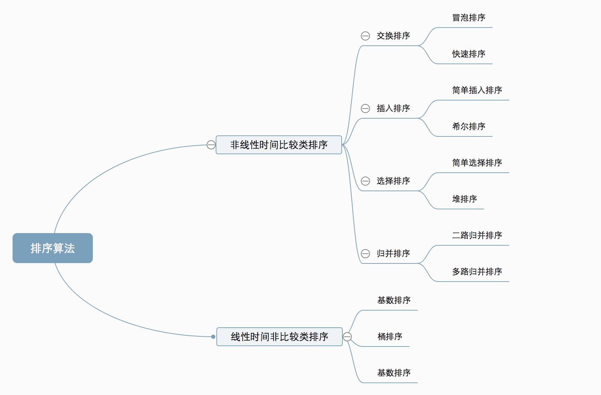
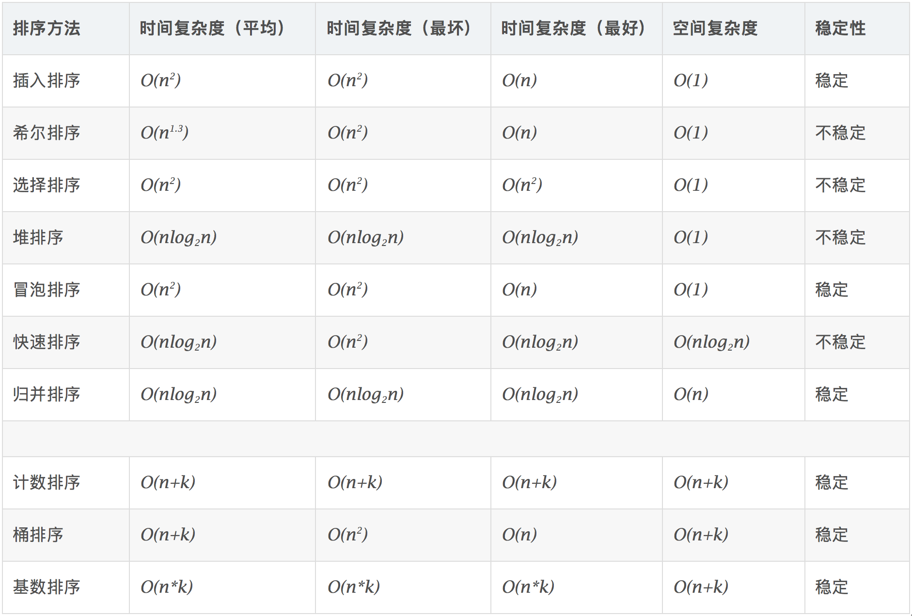
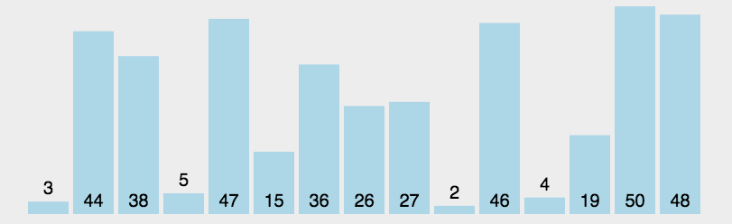
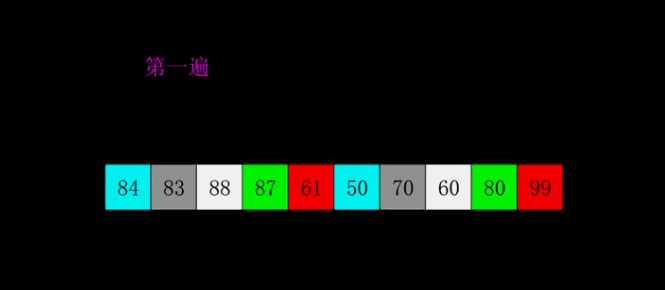
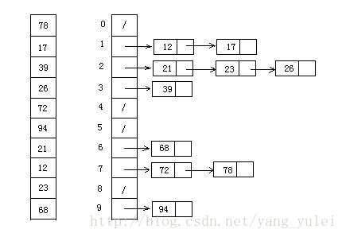
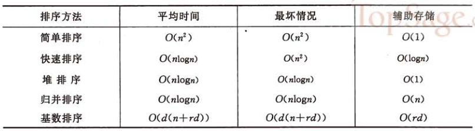

[常见的排序算法——常见的10种排序]
常见算法可以分为两大类：
非线性时间比较类排序：通过比较来决定元素间的相对次序，由于其时间复杂度不能突破O(nlogn)，因此称为非线性时间比较类排序。
线性时间非比较类排序：不通过比较来决定元素间的相对次序，它可以突破基于比较排序的时间下界，以线性时间运行，因此称为线性时间非比较类排序。

算法复杂度：

1、冒泡排序
思路：外层循环从1到n-1，内循环从当前外层的元素的下一个位置开始，依次和外层的元素比较，出现逆序就交换，通过与相邻元素的比较和交换来把小的数交换到最前面。
1 | for(int i=0;i<arr.length-1;i++){//外层循环控制排序趟数 |

2、选择排序
思路：冒泡排序是通过相邻的比较和交换，每次找个最小值。选择排序是：首先在未排序序列中找到最小（大）元素，存放到排序序列的起始位置，然后，再从剩余未排序元素中继续寻找最小（大）元素，然后放到已排序序列的末尾。以此类推，直到所有元素均排序完毕。
1 | private static void sort(int[] array) { |

3、插入排序
思路：通过构建有序序列，对于未排序数据，在已排序序列中从后向前扫描，找到相应位置并插入。可以理解为玩扑克牌时的理牌；
1 | private static void sort(int[] array) { |

4、希尔排序
思路：希尔排序是插入排序的一种高效率的实现，也叫缩小增量排序。先将整个待排记录序列分割成为若干子序列分别进行直接插入排序，待整个序列中的记录基本有序时再对全体记录进行一次直接插入排序。
问题：增量的序列取法？
关于取法，没有统一标准，但最后一步必须是1；因为不同的取法涉及时间复杂度不一样，具体了解可以参考《数据结构与算法分析》；一般以length/2为算法。（再此以gap=gap*3+1为公式）
问题2:为什么不一开始就直接采用插入排序对整个数组排一次呢?
插入排序在数据无规律时，复杂度高，先分组排序后，后面进行插入排序时，元素已经相对有序了,此时插入排序效率会高很多
相关视频
1 | private static void sort(int[] array) { |

5、归并排序
思路：将已有序的子序列合并，得到完全有序的序列；即先使每个子序列有序，再使子序列段间有序。若将两个有序表合并成一个有序表，称为2-路归并。它使用了递归分治的思想；相当于：左半边用尽，则取右半边元素；右半边用尽，则取左半边元素；右半边的当前元素小于左半边的当前元素，则取右半边元素；右半边的当前元素大于左半边的当前元素，则取左半边的元素。
自顶向下：
相关视频
1 | private static void mergeSort(int[] array) { |
自底向上：
1 | public static void sort(int[] array) { |
缺点：因为是Out-place sort，因此相比快排，需要很多额外的空间。
为什么归并排序比快速排序慢？
答：虽然渐近复杂度一样，但是归并排序的系数比快排大。
对于归并排序有什么改进？
答：就是在数组长度为k时，用插入排序，因为插入排序适合对小数组排序。在算法导论思考题2-1中介绍了。复杂度为O(nk+nlg(n/k)) ，当k=O(lgn)时，复杂度为O(nlgn)
例子：
1 | private static int mark = 0; |
6、快速排序
思路：通过一趟排序将待排记录分隔成独立的两部分，其中一部分记录的关键字均比另一部分的关键字小，则可分别对这两部分记录继续进行排序，以达到整个序列有序。
1 | private static void sort(int[] array) { |
1 | package test; |
7、堆排序
思路：堆积是一个近似完全二叉树的结构，并同时满足堆积的性质：即子结点的键值或索引总是小于（或者大于）它的父节点。
1 | public static void sort(int[] a){ |
代码例子：
1 | package test; |

8、计数排序
思路：将输入的数据值转化为键存储在额外开辟的数组空间中。 作为一种线性时间复杂度的排序，计数排序要求输入的数据必须是有确定范围的整数。
找出待排序的数组中最大和最小的元素；
统计数组中每个值为i的元素出现的次数，存入数组C的第i项；
对所有的计数累加（从C中的第一个元素开始，每一项和前一项相加）；
反向填充目标数组：将每个元素i放在新数组的第C(i)项，每放一个元素就将C(i)减去1。
1 | /** |
代码例子：
1 | package test; |

9、桶排序
思路：桶排序是计数排序的升级版。它利用了函数的映射关系，高效与否的关键就在于这个映射函数的确定。桶排序 (Bucket sort)的工作的原理：假设输入数据服从均匀分布，将数据分到有限数量的桶里，每个桶再分别排序（有可能再使用别的排序算法或是以递归方式继续使用桶排序进行排）。
设置一个定量的数组当作空桶；
遍历输入数据，并且把数据一个一个放到对应的桶里去；
对每个不是空的桶进行排序；
从不是空的桶里把排好序的数据拼接起来。
视频介绍
1 | public static void bucketSort(double array[]) { |
代码例子：
1 | package test; |

10、基数排序
思路：基数排序是按照低位先排序，然后收集；再按照高位排序，然后再收集；依次类推，直到最高位。有时候有些属性是有优先级顺序的，先按低优先级排序，再按高优先级排序。最后的次序就是高优先级高的在前，高优先级相同的低优先级高的在前。
取得数组中的最大数，并取得位数；
arr为原始数组，从最低位开始取每个位组成radix数组；
对radix进行计数排序（利用计数排序适用于小范围数的特点）；
1 | private static void radixSort(int[] array,int radix, int distance) { |
代码例子：
1 | package test; |

小结
排序算法要么简单有效，要么是利用简单排序的特点加以改进，要么是以空间换取时间在特定情况下的高效排序。但是这些排序方法都不是固定不变的，需要结合具体的需求和场景来选择甚至组合使用。才能达到高效稳定的目的。没有最好的排序，只有最适合的排序。
下面就总结一下排序算法的各自的使用场景和适用场合。

从平均时间来看，快速排序是效率最高的，但快速排序在最坏情况下的时间性能不如堆排序和归并排序。而后者相比较的结果是，在n较大时归并排序使用时间较少，但使用辅助空间较多。
上面说的简单排序包括除希尔排序之外的所有冒泡排序、插入排序、简单选择排序。其中直接插入排序最简单，但序列基本有序或者n较小时，直接插入排序是好的方法，因此常将它和其他的排序方法，如快速排序、归并排序等结合在一起使用。
基数排序的时间复杂度也可以写成O(d*n)。因此它最使用于n值很大而关键字较小的的序列。若关键字也很大，而序列中大多数记录的最高关键字均不同，则亦可先按最高关键字不同，将序列分成若干小的子序列，而后进行直接插入排序。
从方法的稳定性来比较，基数排序是稳定的内排方法，所有时间复杂度为O(n^2)的简单排序也是稳定的。但是快速排序、堆排序、希尔排序等时间性能较好的排序方法都是不稳定的。稳定性需要根据具体需求选择。
上面的算法实现大多数是使用线性存储结构，像插入排序这种算法用链表实现更好，省去了移动元素的时间。具体的存储结构在具体的实现版本中也是不同的。